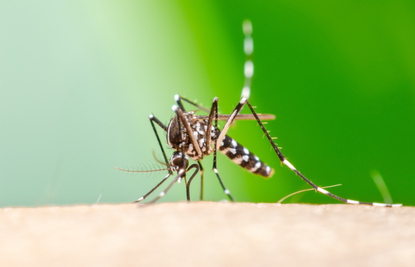
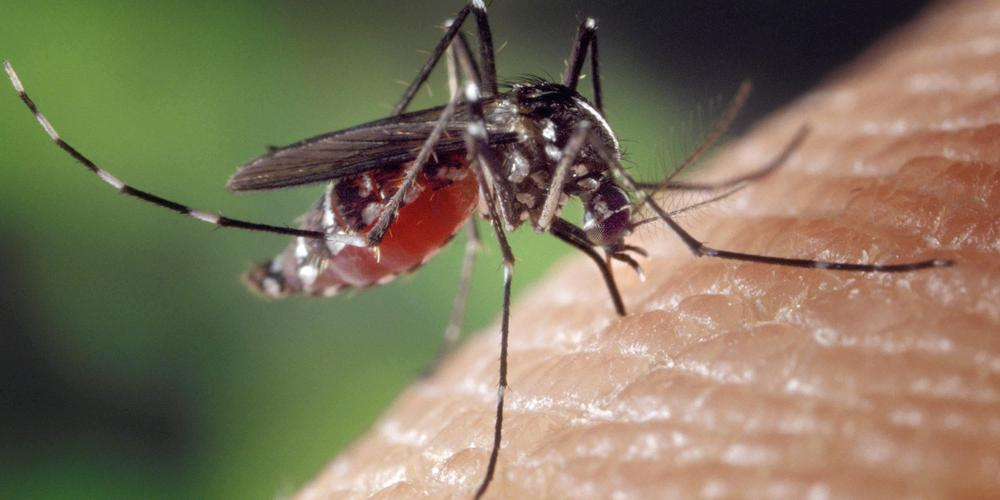

Ambiente saudável
zero arboviroses!
Bem vindo ao site oficial do projeto Ambiente saudável, zero arboviroses! Um projeto desenvolvido por estudantes da EEEP Valter Nunes de Alencar.
Saiba maisSobre o projeto
As arboviroses atingem milhares de pessoas, sendo grave o problema de saúde pública. Dengue é um arbovirose presente em várias regiões do mundo. A temperatura média e a umidade relativa do ar apresentam relação positiva com o aumento de focos AEDES AEGYPTI. Atualmente as três arboviroses de maior importância para a saúde são DENGUE, ZIKA VIRUS, CHIKUNGUNYA. A dengue é uma doença infecciosa febril aguda que pode se apresentar de duas formas; Benigna ou grave. O Zika vírus é considerada arbovirose emergente transmitida por mosquitos do gênero Aedes. O vírus Chikungunya é transmitido por picada de insetos do gênero Aedes. A cada dia que passa a questão ambiental tem sido considerada como um fato que precisa ser trabalhado com toda a sociedade e principalmente nas escolas. É aqui que entra o projeto Ambiente saudável, zero arboviroses! que busca reverter esse quadro tão emergente.
 Incidência de focos no município
Espacialização dos focos de vetores de arbovirozes no município de Araripe-CE, no período de janeiro de 2022 a abril de 2023.
Criadores
- Adailson Cavalcante da Silva
- Ana Beatriz de Almeida
- Francisca Marlene Cirilo de Oliveira
- Iasmim Gomes de Brito
- Izaias Barbosa da Silva
- Kiuane da Silva Lopes
- Maria Ticiane Roseno Soares
- Ruan Henrique Ferreira Veloso
- Tamires da Silva Rodrigues
- Thaila Geraldo da Silva